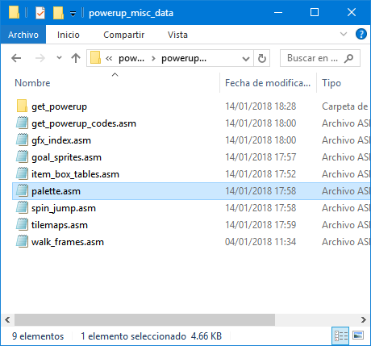

Player GFX and Palette editing
Table of Contents
- Changing Player's palette
- Changing Player's graphics
Changing the player palette can be done via Lunar Magic's palette editor, follow the next steps:
1) Open Lunar Magic's palette editor.
2) Go to powerups_files/powerup_misc_data/palette_files and open the desired palette you want to edit.
3) Once you're done with editing the palette, be sure to save your file as a .mw3 file!

4) Apply the main patch again and check the changes in-game!
Back to top
The player graphics are easily changeable, it doesn't matter if you use this patch or not.
1) Go to powerups_files/graphics/

2) Open any of the bin files that are given to you in that folder and modify them as you wish.
4) Apply the main patch again and check the changes in-game!
If you haven't noticed, this is almost the same as modifying the player graphics in the original game.
Back to top
Return to the main page